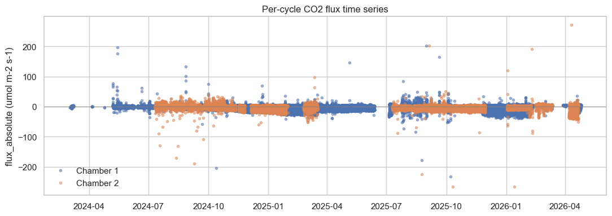
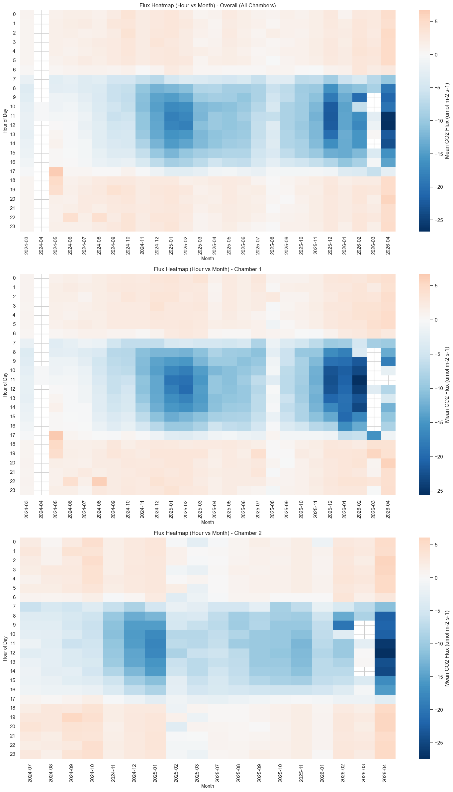
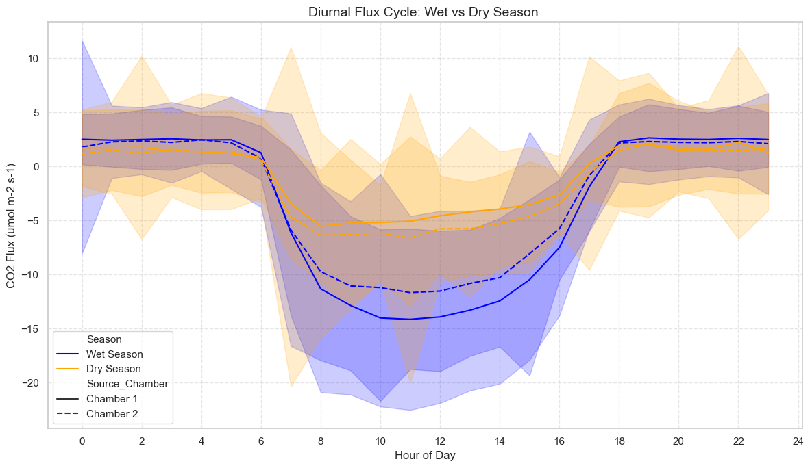

001 - End-to-end on LIBZ data (raw .dat -> validation)#
This notebook runs the full palmwtc pipeline starting from raw TOA5
.dat files on a real LIBZ-style oil-palm whole-tree-chamber
dataset using default arguments throughout. Every step that the
per-stage tutorials (010-035) cover individually is exercised here in
one continuous flow.
The LIBZ raw data is not bundled with palmwtc and is not publicly available. This notebook is intended for collaborators who have their own equivalent oil-palm chamber dataset on disk. For a self-contained demo on the bundled synthetic sample, see 000_End_to_End_Synthetic.ipynb.
Pipeline shown (each cell is one palmwtc API call):
raw .dat per sensor
| get_cloud_sensor_dirs / read_toa5_file (in load_from_multiple_dirs)
v
per-sensor DataFrames (chamber_1, chamber_2, climate, soil_sensor)
| outer-merge on TIMESTAMP + integrate_temp_humidity_c2
v
unified df_raw (~119 columns)
| export_monthly (optional) QCProcessor.process_variable
v (full sensor set)
df_qc (with *_qc_flag columns)
| prepare_chamber_data + calculate_flux_cycles
v
cycles_all (per-cycle flux + R2 + qc_flag)
| compute_ml_anomaly_flags (USE_ML_QC toggle)
v
WindowSelector.score_cycles().identify_windows()
| run_science_validation (Amax, Q10, WUE, inter-chamber agreement)
v
threshold sensitivity sweep + visualisations
Requires:
palmwtc 0.4.1+ installed (the AWS
--na_values fix is needed in any radiation-aware step).A LIBZ-style chamber-data root with this layout:
$PALMWTC_LIBZ_DATA_ROOT/ |-- Raw/shared_drive_palmstudio/Raw Data/Chamber/ <- TOA5 .dat archive |-- Data/Integrated_Monthly/ <- post-010 monthly CSVs '-- config/variable_config.json <- QC variable config
The env var
PALMWTC_LIBZ_DATA_ROOTexported before launching JupyterLab (or papermill). Example:export PALMWTC_LIBZ_DATA_ROOT=/path/to/your/data
If your subfolders do not match the layout above, three more env vars override individual paths:
PALMWTC_LIBZ_RAW_DIR,PALMWTC_LIBZ_MONTHLY_DIR,PALMWTC_LIBZ_CONFIG_DIR.~10-25 minutes wall time (the raw-load step is the slow one; expect a few minutes for QC + cycles + ML + validation).
1. Setup + assert real data#
The whole notebook is driven by one required environment variable,
PALMWTC_LIBZ_DATA_ROOT. From it we derive the raw-.dat root, the
post-010 monthly CSV directory, and the QC config directory. The cell
below aborts immediately with a clear message if the env var is missing
or the expected subfolders are absent — it never silently falls back to
the bundled synthetic sample.
If your data layout does not match the LIBZ convention, three more env
vars (PALMWTC_LIBZ_RAW_DIR, PALMWTC_LIBZ_MONTHLY_DIR,
PALMWTC_LIBZ_CONFIG_DIR) let you override individual subpaths.
import os
from pathlib import Path
import pandas as pd
import matplotlib.pyplot as plt
import palmwtc
from palmwtc.config import DataPaths
assert palmwtc.__version__ >= "0.4.1", \
f"palmwtc 0.4.1+ required (AWS '--' na_values fix); got {palmwtc.__version__}"
paths = DataPaths.resolve()
print(paths.describe())
LIBZ_DATA_ROOT = os.environ.get("PALMWTC_LIBZ_DATA_ROOT")
if not LIBZ_DATA_ROOT:
raise RuntimeError(
"PALMWTC_LIBZ_DATA_ROOT is not set.\n\n"
"This notebook walks the full pipeline on a real LIBZ-style chamber\n"
"dataset. The raw LIBZ data is NOT bundled with palmwtc and is NOT\n"
"publicly available - you need an existing chamber-data root with\n"
"this subfolder layout:\n\n"
" $PALMWTC_LIBZ_DATA_ROOT/\n"
" Raw/shared_drive_palmstudio/Raw Data/Chamber/ <- TOA5 .dat archive\n"
" Data/Integrated_Monthly/ <- post-010 monthly CSVs\n"
" config/variable_config.json <- QC variable config\n\n"
"If your data is laid out differently, override individual subpaths\n"
"with PALMWTC_LIBZ_RAW_DIR, PALMWTC_LIBZ_MONTHLY_DIR, and\n"
"PALMWTC_LIBZ_CONFIG_DIR.\n\n"
"For the bundled synthetic-data demo, see 000_End_to_End_Synthetic.ipynb."
)
DATA_ROOT = Path(LIBZ_DATA_ROOT)
raw_root = Path(os.environ.get(
"PALMWTC_LIBZ_RAW_DIR",
str(DATA_ROOT / "Raw" / "shared_drive_palmstudio" / "Raw Data" / "Chamber"),
))
monthly_dir = Path(os.environ.get(
"PALMWTC_LIBZ_MONTHLY_DIR",
str(DATA_ROOT / "Data" / "Integrated_Monthly"),
))
config_dir = Path(os.environ.get(
"PALMWTC_LIBZ_CONFIG_DIR",
str(DATA_ROOT / "config"),
))
if not raw_root.exists() or not (raw_root / "main").exists():
raise RuntimeError(
f"Raw .dat root not found or missing 'main/' subdir at: {raw_root}\n"
"Override with PALMWTC_LIBZ_RAW_DIR if your raw archive lives elsewhere."
)
print(f"\nLIBZ data root : {DATA_ROOT}")
print(f" raw_root : {raw_root}")
print(f" monthly_dir : {monthly_dir}")
print(f" config_dir : {config_dir}")
print(f"palmwtc version : {palmwtc.__version__}")
DataPaths (source=sample (bundled synthetic), site=libz):
raw_dir = /Users/adisapoetro/Projects/flux_chamber/palmwtc/src/palmwtc/data/sample/synthetic
processed_dir = /Users/adisapoetro/Projects/flux_chamber/palmwtc/src/palmwtc/data/sample/Data/Integrated_QC_Data
exports_dir = /Users/adisapoetro/Projects/flux_chamber/palmwtc/src/palmwtc/data/sample/exports
config_dir = /Users/adisapoetro/Projects/flux_chamber/palmwtc/src/palmwtc/data/sample/config
extras = <none>
LIBZ data root : /Users/adisapoetro/Projects/flux_chamber/research
raw_root : /Users/adisapoetro/Projects/flux_chamber/research/Raw/shared_drive_palmstudio/Raw Data/Chamber
monthly_dir : /Users/adisapoetro/Projects/flux_chamber/research/Data/Integrated_Monthly
config_dir : /Users/adisapoetro/Projects/flux_chamber/research/config
palmwtc version : 0.4.1
2. Discover raw .dat directories#
get_cloud_sensor_dirs(raw_root) walks the LIBZ shared-drive layout
(main/ plus update_YYMMDD/ increments) and returns one entry list
per sensor type: chamber_1, chamber_2, climate, soil_sensor.
from palmwtc.io import get_cloud_sensor_dirs
sensor_dirs = get_cloud_sensor_dirs(raw_root)
for sensor, entries in sensor_dirs.items():
print(f" {sensor:<14} {len(entries):>3} dirs")
Cloud chamber_1: 15 directories found
Cloud chamber_2: 15 directories found
Cloud climate: 15 directories found
Cloud soil_sensor: 15 directories found
chamber_1 15 dirs
chamber_2 15 dirs
climate 15 dirs
soil_sensor 15 dirs
3. Demonstrate the raw TOA5 .dat API on one sensor#
load_from_multiple_dirs(entries) reads every .dat file under each
sensor directory (using read_toa5_file internally) and concatenates
them chronologically into a DataFrame. This is the building block
notebook 010_Data_Integration uses to
build the full multi-sensor df_raw.
We exercise the API on one sensor (chamber_1) here so the reader
sees the raw-data path explicitly. The full multi-sensor integration
(chamber_1 + chamber_2 + climate + soil_sensor + weather station + the
C2 air-T / RH fallback merge etc. — about 50 cells of LIBZ-specific
plumbing) lives in notebook 010 and produces the
Integrated_Monthly/Integrated_Data_*.csv files that §4 below loads.
from palmwtc.io import load_from_multiple_dirs
c1_df = load_from_multiple_dirs(sensor_dirs["chamber_1"])
print(f"chamber_1 raw .dat -> DataFrame:")
print(f" {c1_df.shape[0]:,} rows x {c1_df.shape[1]} columns")
print(f" time range: {c1_df['TIMESTAMP'].min()} -> {c1_df['TIMESTAMP'].max()}")
print(f" columns: {sorted(c1_df.columns.tolist())[:10]} ...")
Found 293 files in /Users/adisapoetro/Projects/flux_chamber/research/Raw/shared_drive_palmstudio/Raw Data/Chamber/main/chamber_1
Loaded 3606463 records
Found 24 files in /Users/adisapoetro/Projects/flux_chamber/research/Raw/shared_drive_palmstudio/Raw Data/Chamber/update_251230/11_chamber1
Loaded 198225 records
Found 25 files in /Users/adisapoetro/Projects/flux_chamber/research/Raw/shared_drive_palmstudio/Raw Data/Chamber/update_251230/12_chamber1
Loaded 206399 records
Found 12 files in /Users/adisapoetro/Projects/flux_chamber/research/Raw/shared_drive_palmstudio/Raw Data/Chamber/update_260115/01_chamber1
Loaded 108000 records
Found 13 files in /Users/adisapoetro/Projects/flux_chamber/research/Raw/shared_drive_palmstudio/Raw Data/Chamber/update_260131/01_chamber1
Loaded 108000 records
Found 16 files in /Users/adisapoetro/Projects/flux_chamber/research/Raw/shared_drive_palmstudio/Raw Data/Chamber/update_260221/02_chamber1
Loaded 101678 records
Found 5 files in /Users/adisapoetro/Projects/flux_chamber/research/Raw/shared_drive_palmstudio/Raw Data/Chamber/update_260228/02_chamber1
Loaded 42600 records
Found 6 files in /Users/adisapoetro/Projects/flux_chamber/research/Raw/shared_drive_palmstudio/Raw Data/Chamber/update_260307/03_chamber1
Loaded 49738 records
Found 5 files in /Users/adisapoetro/Projects/flux_chamber/research/Raw/shared_drive_palmstudio/Raw Data/Chamber/update_260314/03_chamber1
Loaded 35386 records
Found 8 files in /Users/adisapoetro/Projects/flux_chamber/research/Raw/shared_drive_palmstudio/Raw Data/Chamber/update_260328/03_chamber1
Loaded 86762 records
Found 2 files in /Users/adisapoetro/Projects/flux_chamber/research/Raw/shared_drive_palmstudio/Raw Data/Chamber/update_260404/03_chamber1
Loaded 17340 records
Found 3 files in /Users/adisapoetro/Projects/flux_chamber/research/Raw/shared_drive_palmstudio/Raw Data/Chamber/update_260404/04_chamber1
Loaded 28800 records
Found 5 files in /Users/adisapoetro/Projects/flux_chamber/research/Raw/shared_drive_palmstudio/Raw Data/Chamber/update_260411/04_chamber1
Loaded 34950 records
Found 6 files in /Users/adisapoetro/Projects/flux_chamber/research/Raw/shared_drive_palmstudio/Raw Data/Chamber/update_260418/04_chamber1
Loaded 37725 records
Found 6 files in /Users/adisapoetro/Projects/flux_chamber/research/Raw/shared_drive_palmstudio/Raw Data/Chamber/update_260425/04_chamber1
Loaded 50400 records
Combined: 4,199,842 unique records from 15 source(s)
chamber_1 raw .dat -> DataFrame:
4,199,842 rows x 24 columns
time range: 2024-03-02 10:12:28 -> 2026-04-25 12:50:16
columns: ['Active_Chamber', 'AtmosphericPressure_1', 'CO2', 'CO2b', 'CO2c', 'ChamberIsClosed', 'Chamber_state', 'H2O', 'H2Ob', 'H2Oc'] ...
4. Load the integrated monthly CSVs (production starting point)#
For the actual pipeline run we use the pre-integrated monthly CSVs that
notebook 010 produces — Integrated_Data_YYYY-MM.csv files in
paths.processed_dir/../Integrated_Monthly/. These contain the full
multi-sensor merge (both chambers, climate, soil, weather station)
already done.
load_monthly_data concatenates all monthly files chronologically and
applies a first-pass physical-bounds filter (drops rows with
out-of-range pressure, temperature, RH, or soil water potential).
from palmwtc.io import load_monthly_data
# monthly_dir was set in §1 from PALMWTC_LIBZ_DATA_ROOT (or the override env var).
if not monthly_dir.exists() or not list(monthly_dir.glob("Integrated_Data_*.csv")):
raise RuntimeError(
f"No Integrated_Data_YYYY-MM.csv files found at {monthly_dir}.\n"
"Run notebook 010 first to produce them, or override\n"
"PALMWTC_LIBZ_MONTHLY_DIR to a directory that contains them."
)
df_raw = load_monthly_data(monthly_dir).reset_index()
print(f"df_raw: {df_raw.shape[0]:,} rows x {df_raw.shape[1]} columns")
print(f"Time range: {df_raw['TIMESTAMP'].min()} -> {df_raw['TIMESTAMP'].max()}")
Loading 26 monthly file(s)...
Integrated_Data_2024-03.csv: 50,006 rows (2024-03-02 10:12:28 to 2024-03-08 09:26:08)
Integrated_Data_2024-04.csv: 1,050 rows (2024-04-05 10:10:20 to 2024-04-24 11:45:16)
Integrated_Data_2024-05.csv: 128,507 rows (2024-05-07 12:00:20 to 2024-05-31 23:50:16)
Integrated_Data_2024-06.csv: 111,277 rows (2024-06-01 00:00:20 to 2024-06-30 23:50:16)
Integrated_Data_2024-07.csv: 162,717 rows (2024-07-01 00:00:20 to 2024-07-31 23:50:16)
/Users/adisapoetro/Projects/flux_chamber/palmwtc/src/palmwtc/io/loaders.py:83: DtypeWarning: Columns (12,13) have mixed types. Specify dtype option on import or set low_memory=False.
df = pd.read_csv(f, parse_dates=["TIMESTAMP"])
Integrated_Data_2024-08.csv: 182,595 rows (2024-08-01 00:00:20 to 2024-08-31 23:50:32)
Integrated_Data_2024-09.csv: 171,318 rows (2024-09-01 00:00:36 to 2024-09-30 23:50:36)
Integrated_Data_2024-10.csv: 214,952 rows (2024-10-01 00:00:40 to 2024-10-31 23:50:36)
Integrated_Data_2024-11.csv: 227,314 rows (2024-11-01 00:00:40 to 2024-11-30 23:50:16)
Integrated_Data_2024-12.csv: 233,254 rows (2024-12-01 00:01:00 to 2024-12-31 23:50:36)
Integrated_Data_2025-01.csv: 217,066 rows (2025-01-01 00:00:20 to 2025-01-31 23:50:16)
Integrated_Data_2025-02.csv: 201,037 rows (2025-02-01 00:00:20 to 2025-02-28 23:50:36)
Integrated_Data_2025-03.csv: 209,528 rows (2025-03-01 00:00:20 to 2025-03-31 23:50:16)
Integrated_Data_2025-04.csv: 161,908 rows (2025-04-01 00:00:20 to 2025-04-30 23:50:16)
Integrated_Data_2025-05.csv: 200,008 rows (2025-05-01 00:00:20 to 2025-05-31 23:50:16)
Integrated_Data_2025-06.csv: 80,777 rows (2025-06-01 00:00:20 to 2025-06-12 12:50:16)
Integrated_Data_2025-07.csv: 164,056 rows (2025-07-05 08:30:20 to 2025-07-31 23:50:36)
Integrated_Data_2025-08.csv: 187,785 rows (2025-08-01 00:00:20 to 2025-08-31 23:50:36)
Integrated_Data_2025-09.csv: 198,485 rows (2025-09-01 00:00:20 to 2025-09-30 23:50:36)
Integrated_Data_2025-10.csv: 212,015 rows (2025-10-01 00:00:20 to 2025-10-31 23:50:36)
Integrated_Data_2025-11.csv: 217,515 rows (2025-11-01 00:00:20 to 2025-11-30 23:50:36)
Integrated_Data_2025-12.csv: 215,860 rows (2025-12-01 00:00:20 to 2025-12-31 23:50:16)
Integrated_Data_2026-01.csv: 226,340 rows (2026-01-01 00:00:20 to 2026-01-31 13:20:36)
Integrated_Data_2026-02.csv: 156,391 rows (2026-02-02 09:00:20 to 2026-02-28 23:50:36)
Integrated_Data_2026-03.csv: 220,297 rows (2026-03-01 00:00:20 to 2026-03-31 23:50:36)
Integrated_Data_2026-04.csv: 158,480 rows (2026-04-01 00:00:20 to 2026-04-25 12:50:36)
Removing 57,604 rows containing outliers (Temp/Pres/RH < -100, Temp > 100, WP > 1000, Pres < 50).
Total: 4,452,934 rows
Date range: 2024-03-02 10:12:28 to 2026-04-25 12:50:36
df_raw: 4,452,934 rows x 42 columns
Time range: 2024-03-02 10:12:28 -> 2026-04-25 12:50:36
5. (Optional) Re-export monthly CSVs from df_raw#
export_monthly splits a DataFrame by calendar month and writes one
Integrated_Data_YYYY-MM.csv per month. This is the inverse of §4 —
useful if you want to round-trip df_raw to disk. Off by default
because §4 already loaded the existing CSVs; turning this on would
rewrite them.
from palmwtc.io import export_monthly
EXPORT_MONTHLY = False # set True to round-trip to disk
if EXPORT_MONTHLY:
monthly_dir.mkdir(parents=True, exist_ok=True)
export_monthly(df_raw, monthly_dir)
print(f"Monthly CSVs (re)written under: {monthly_dir}")
else:
print(f"EXPORT_MONTHLY=False -> df_raw is used in-memory only "
"(no disk write).")
EXPORT_MONTHLY=False -> df_raw is used in-memory only (no disk write).
6. Data integrity report#
data_integrity_report summarises NaN fraction and time-gap statistics
per column. A first sanity check before QC: any column with very high
NaN % or unexpectedly large gaps deserves a closer look in
011_Weather_vs_Chamber before trusting
the downstream flux cycles.
from palmwtc.io import data_integrity_report
integrity = data_integrity_report(df_raw)
integrity.head(20)
| rows | start | end | median_dt_sec | pct_duplicates | gaps_over_cycle_pct | missing_CO2_C1 | missing_CO2_C2 | missing_Temp_1_C1 | missing_Temp_1_C2 | missing_H2O_C1 | missing_H2O_C2 | missing_H2O_C1_corrected | missing_H2O_C2_corrected | wpl_input_valid_pct_C1 | wpl_input_valid_pct_C2 | |
|---|---|---|---|---|---|---|---|---|---|---|---|---|---|---|---|---|
| 0 | 4452934 | 2024-03-02 10:12:28 | 2026-04-25 12:50:36 | 4.0 | 0.0 | 1.276686 | 6.962017 | 33.444466 | 9.384487 | 10.15353 | 6.962017 | 33.444466 | NaN | NaN | 85.436456 | 60.999355 |
7. Rule-based QC across the full sensor set#
QCProcessor is the OOP entry point that wraps every individual rule
(physical bounds, IQR, rate-of-change, persistence, breakpoints, drift,
sensor exclusion). The variable-by-variable configuration lives in
paths.config_dir / "variable_config.json"; one process_variable(var)
call applies the full rule set for that variable and adds a
<var>_qc_flag column with values 0 (good) / 1 (suspect) / 2 (bad).
For the LIBZ deployment ~12 variables are configured (CO2, H2O, Temp_1, RH_1, VaporPressure_1, AtmosphericPressure_1, plus battery proxies), each per chamber. The full multi-pass QC is what notebook 020 spends 17 minutes on.
import json
from palmwtc.qc import QCProcessor
# config_dir was set in §1 from PALMWTC_LIBZ_DATA_ROOT (or PALMWTC_LIBZ_CONFIG_DIR).
var_cfg_path = config_dir / "variable_config.json"
if not var_cfg_path.exists():
raise FileNotFoundError(
f"variable_config.json not found at {var_cfg_path}. "
"Override PALMWTC_LIBZ_CONFIG_DIR to point at the directory that contains it."
)
var_cfg = json.loads(var_cfg_path.read_text())
# variable_config.json has bare logical names ("CO2", "H2O", "Temp") whose
# .columns field expands to actual chamber-suffixed column names
# (e.g. CO2 -> ["CO2_C1", "CO2_C2"]). Build the flat list of columns to QC,
# filtering to columns actually present in df_raw and skipping *_source markers.
qc_columns = []
for var, sub in var_cfg.items():
qc_columns.extend(sub.get("columns", []))
qc_columns = [c for c in dict.fromkeys(qc_columns) # de-dupe, preserve order
if c in df_raw.columns and not c.endswith("_source")]
print(f"Logical variables in config : {len(var_cfg)} ({sorted(var_cfg)})")
print(f"Actual columns to QC : {len(qc_columns)}")
print(f" {qc_columns}")
proc = QCProcessor(df=df_raw.copy(), config_dict=var_cfg)
Logical variables in config : 12 (['AtmosphericPressure', 'CO2', 'H2O', 'PressureHead', 'RH', 'SoilAirTemp', 'SoilRH', 'SoilTemp', 'SoilWaterPot', 'Temp', 'VaporPressure', 'battery_proxy'])
Actual columns to QC : 12
['CO2_C1', 'CO2_C2', 'H2O_C1', 'H2O_C2', 'VaporPressure_1_C1', 'Temp_1_C1', 'Temp_1_C2', 'RH_1_C1', 'RH_1_C2', 'AtmosphericPressure_1_C1', 'AirTC_Avg_Soil', 'RH_Avg_Soil']
# Apply the full rule-set, one column at a time.
qc_results = {}
for col in qc_columns:
res = proc.process_variable(col, random_seed=42)
qc_results[col] = res["summary"]
df_qc = proc.get_processed_dataframe()
print(f"df_qc shape after QC : {df_qc.shape[0]:,} rows x {df_qc.shape[1]} cols")
# Summarise pass / suspect / bad per QC'd column.
summary = pd.DataFrame.from_dict(qc_results, orient="index")
keep_cols = [c for c in
("flag_0_count", "flag_1_count", "flag_2_count",
"flag_0_percent", "flag_1_percent", "flag_2_percent")
if c in summary.columns]
summary[keep_cols].sort_index()
Warning: Persistence check failed for CO2_C1: window must be an integer 0 or greater
Warning: Persistence check failed for CO2_C2: window must be an integer 0 or greater
Warning: Persistence check failed for H2O_C1: window must be an integer 0 or greater
Warning: Persistence check failed for H2O_C2: window must be an integer 0 or greater
Warning: Persistence check failed for VaporPressure_1_C1: window must be an integer 0 or greater
Warning: Persistence check failed for Temp_1_C1: window must be an integer 0 or greater
Warning: Persistence check failed for Temp_1_C2: window must be an integer 0 or greater
Warning: Persistence check failed for RH_1_C1: window must be an integer 0 or greater
Warning: Persistence check failed for RH_1_C2: window must be an integer 0 or greater
Warning: Persistence check failed for AtmosphericPressure_1_C1: window must be an integer 0 or greater
Warning: Persistence check failed for AirTC_Avg_Soil: window must be an integer 0 or greater
Warning: Persistence check failed for RH_Avg_Soil: window must be an integer 0 or greater
df_qc shape after QC : 4,452,934 rows x 66 cols
| flag_0_count | flag_1_count | flag_2_count | flag_0_percent | flag_1_percent | flag_2_percent | |
|---|---|---|---|---|---|---|
| AirTC_Avg_Soil | 4452173 | 761 | 0 | 99.982910 | 0.017090 | 0.000000 |
| AtmosphericPressure_1_C1 | 4448793 | 4141 | 0 | 99.907005 | 0.092995 | 0.000000 |
| CO2_C1 | 4395953 | 51447 | 5534 | 98.720372 | 1.155351 | 0.124278 |
| CO2_C2 | 4133278 | 301131 | 18525 | 92.821452 | 6.762530 | 0.416018 |
| H2O_C1 | 4012902 | 109216 | 330816 | 90.118156 | 2.452675 | 7.429169 |
| H2O_C2 | 4069450 | 136126 | 247358 | 91.388060 | 3.056996 | 5.554944 |
| RH_1_C1 | 4444146 | 8788 | 0 | 99.802647 | 0.197353 | 0.000000 |
| RH_1_C2 | 4419908 | 33026 | 0 | 99.258332 | 0.741668 | 0.000000 |
| RH_Avg_Soil | 4441847 | 11087 | 0 | 99.751018 | 0.248982 | 0.000000 |
| Temp_1_C1 | 3107304 | 1345630 | 0 | 69.781048 | 30.218952 | 0.000000 |
| Temp_1_C2 | 4403992 | 48942 | 0 | 98.900904 | 1.099096 | 0.000000 |
| VaporPressure_1_C1 | 4363431 | 89501 | 2 | 97.990022 | 2.009933 | 0.000045 |
8. Flux cycles - both chambers#
Two-chamber loop: prepare_chamber_data selects and cleans columns for
one chamber suffix using the QC flags from §7; calculate_flux_cycles
finds every closed-chamber cycle, fits a linear regression to the CO2
ramp, and returns one row per cycle with flux, fit metrics
(R2, NRMSE, SNR), and a per-cycle QC flag.
Zero kwargs — palmwtc 0.3.0+ defaults
(accepted_co2_qc_flags=(0,), apply_wpl=False, etc.) match LIBZ
production. Inspect with help(palmwtc.flux.prepare_chamber_data).
from palmwtc.flux import prepare_chamber_data, calculate_flux_cycles
CHAMBER_MAP = {"C1": "Chamber 1", "C2": "Chamber 2"}
cycles_per_chamber = []
for suffix, name in CHAMBER_MAP.items():
if f"CO2_{suffix}" not in df_qc.columns:
print(f" [skip] {name}: CO2_{suffix} column not present")
continue
chamber_df = prepare_chamber_data(df_qc, suffix)
cycles = calculate_flux_cycles(chamber_df, name)
print(f" [{name}] {len(cycles):>5} cycles "
f"| mean flux: {cycles['flux_absolute'].mean():+.2f} umol m-2 s-1")
cycles_per_chamber.append(cycles)
cycles_all = pd.concat(cycles_per_chamber, ignore_index=True)
cycles_all = cycles_all.rename(columns={"flux_date": "flux_datetime"})
print(f"\nCombined: {len(cycles_all):,} cycles "
f"across {cycles_all['Source_Chamber'].nunique()} chamber(s)")
cycles_all[
["Source_Chamber", "cycle_id", "flux_datetime",
"flux_absolute", "flux_slope", "r2", "qc_flag"]
].head()
[Chamber 1] 49613 cycles | mean flux: -2.66 umol m-2 s-1
[Chamber 2] 32123 cycles | mean flux: -2.47 umol m-2 s-1
Combined: 81,736 cycles across 2 chamber(s)
| Source_Chamber | cycle_id | flux_datetime | flux_absolute | flux_slope | r2 | qc_flag | |
|---|---|---|---|---|---|---|---|
| 0 | Chamber 1 | 1 | 2024-03-02 10:12:28 | -3.005040 | -0.037436 | 0.961666 | 0 |
| 1 | Chamber 1 | 2 | 2024-03-02 10:20:20 | -2.306928 | -0.028733 | 0.988848 | 1 |
| 2 | Chamber 1 | 3 | 2024-03-04 07:30:24 | -0.575610 | -0.007041 | 0.827022 | 0 |
| 3 | Chamber 1 | 4 | 2024-03-04 07:40:20 | -0.940172 | -0.011509 | 0.929553 | 0 |
| 4 | Chamber 1 | 5 | 2024-03-04 07:50:20 | -1.354833 | -0.016595 | 0.956027 | 1 |
9. ML anomaly overlay (toggleable)#
compute_ml_anomaly_flags adds two unsupervised detectors on top of
the rule-based QC: an Isolation Forest (low-density anomalies) and a
Robust-Covariance / Minimum-Covariance-Determinant detector
(Mahalanobis distance from the robust centroid). Trained on
rule-based A/B cycles (flux_qc <= 1), scored on all cycles, combined
in AND mode by default — flagging a cycle only when both detectors
agree.
Set USE_ML_QC = False to keep the rule-based flags only and skip the
~30-second model fit. The downstream cells use whichever flag set is
present, so the rest of the notebook is unaffected.
from palmwtc.flux import compute_ml_anomaly_flags
USE_ML_QC = True # set False to skip ML overlay (rule-based flags only)
if USE_ML_QC:
cycles_all = compute_ml_anomaly_flags(cycles_all)
n_total = len(cycles_all)
n_ml = int(cycles_all["ml_anomaly_flag"].sum())
n_rule_pass = int((cycles_all["qc_flag"] <= 1).sum())
print(f"ML overlay applied (AND mode):")
print(f" total cycles : {n_total:>6,}")
print(f" rule-based pass (A/B, qc<=1) : {n_rule_pass:>6,} "
f"({100*n_rule_pass/n_total:.1f}%)")
print(f" ml_anomaly_flag = 1 (joint detect): {n_ml:>6,} "
f"({100*n_ml/n_total:.1f}%)")
print()
print("IF score (lower = more anomalous):")
print(cycles_all["ml_if_score"].describe().round(4))
print()
print("MCD distance (larger = farther from cluster):")
print(cycles_all["ml_mcd_dist"].describe().round(3))
else:
cycles_all["ml_anomaly_flag"] = 0
cycles_all["ml_if_score"] = float("nan")
cycles_all["ml_mcd_dist"] = float("nan")
print("USE_ML_QC=False -> ml_anomaly_flag set to 0 for all cycles "
"(downstream uses rule-based flags only).")
ML overlay applied (AND mode):
total cycles : 81,736
rule-based pass (A/B, qc<=1) : 81,736 (100.0%)
ml_anomaly_flag = 1 (joint detect): 1,117 (1.4%)
IF score (lower = more anomalous):
count 81736.0000
mean -0.3819
std 0.0360
min -0.7288
25% -0.3937
50% -0.3699
75% -0.3573
max -0.3412
Name: ml_if_score, dtype: float64
MCD distance (larger = farther from cluster):
count 81736.000
mean 11.327
std 338.896
min 0.961
25% 2.244
50% 3.161
75% 5.720
max 57148.294
Name: ml_mcd_dist, dtype: float64
10. Calibration windows#
WindowSelector scores every cycle (regression, robustness, sensor QC,
drift, cross-chamber agreement) and identifies consecutive spans of
high-quality days suitable for XPalm calibration. The synthetic sample
typically yields zero qualifying windows (only 7 days); a real
multi-month dataset yields several.
from palmwtc.windows import WindowSelector
ws = WindowSelector(cycles_all)
ws.score_cycles()
ws.identify_windows()
ws.summary()
n_high_conf = int((ws.cycles_df["cycle_confidence"] >= 0.65).sum())
print(f"\nCycles with cycle_confidence >= 0.65: {n_high_conf:,}")
=== WindowSelector summary ===
Total cycles loaded : 81,736
Confidence mean : 0.489
Cycles ≥ 0.65 : 0 (0.0%)
Cycles with cycle_confidence >= 0.65: 0
11. Science validation#
run_science_validation checks the cycles against published oil-palm
ecophysiology references:
Test |
Reference range |
|---|---|
Light-response Amax |
15-35 umol m-2 s-1 (Lamade & Bouillet 2005) |
Temperature response Q10 |
1.5-3.5 (tropical canopies) |
Water-use efficiency vs VPD |
Medlyn et al. 2011 stomatal optimality |
Inter-chamber agreement |
< 30% relative mean difference |
Tests need Global_Radiation, h2o_slope, and vpd_kPa columns.
Those come from the weather-station merge + the H2O flux step. Real
multi-month LIBZ data populates them naturally.
from palmwtc.validation import run_science_validation
cycles_for_val = ws.cycles_df.copy()
for col in ("Global_Radiation", "h2o_slope", "vpd_kPa"):
if col not in cycles_for_val.columns:
cycles_for_val[col] = float("nan")
if "co2_slope" not in cycles_for_val.columns:
cycles_for_val["co2_slope"] = cycles_for_val["flux_slope"]
report = run_science_validation(cycles_for_val)
sc = report["scorecard"]
pd.DataFrame({
"metric": ["pass", "borderline", "fail", "n/a"],
"count": [sc["n_pass"], sc["n_borderline"], sc["n_fail"], sc["n_na"]],
})
| metric | count | |
|---|---|---|
| 0 | pass | 0 |
| 1 | borderline | 1 |
| 2 | fail | 0 |
| 3 | n/a | 10 |
12. Threshold sensitivity sweep#
How does the science-validation outcome change as you tighten / loosen
the cycle_confidence cut-off? Sweep three thresholds and re-run
validation on the surviving subset. The dedicated [035 tutorial]
(035_QC_Threshold_Sensitivity.ipynb) shows the full grid.
sweep = []
for thresh in (0.50, 0.65, 0.80):
sub = cycles_for_val[cycles_for_val["cycle_confidence"] >= thresh].copy()
if len(sub) == 0:
sweep.append({
"cycle_confidence_min": thresh, "n_cycles": 0,
"n_pass": 0, "n_borderline": 0, "n_fail": 0, "n_na": 4,
})
continue
rep = run_science_validation(sub)
sw = rep["scorecard"]
sweep.append({
"cycle_confidence_min": thresh,
"n_cycles": len(sub),
"n_pass": sw["n_pass"], "n_borderline": sw["n_borderline"],
"n_fail": sw["n_fail"], "n_na": sw["n_na"],
})
pd.DataFrame(sweep)
| cycle_confidence_min | n_cycles | n_pass | n_borderline | n_fail | n_na | |
|---|---|---|---|---|---|---|
| 0 | 0.50 | 57005 | 0 | 1 | 0 | 10 |
| 1 | 0.65 | 0 | 0 | 0 | 0 | 4 |
| 2 | 0.80 | 0 | 0 | 0 | 0 | 4 |
13. Visualisations#
Three first-look plots that confirm whether the chambers captured a real biological signal:
Per-cycle flux time series.
Diurnal-by-month heatmap (day = uptake -> blue, night = release -> red).
Tropical seasonal-diurnal pattern (averaged over the dataset).
from palmwtc.viz import set_style
set_style()
cycles_for_viz = cycles_for_val.copy()
cycles_for_viz["flux_date"] = cycles_for_viz["flux_datetime"] # alias
# 1. Per-cycle flux time series
fig1, ax1 = plt.subplots(figsize=(11, 4))
for chamber, sub in cycles_for_viz.groupby("Source_Chamber"):
ax1.plot(sub["flux_datetime"], sub["flux_absolute"],
marker=".", linestyle="", alpha=0.5, label=str(chamber))
ax1.axhline(0, color="grey", lw=0.6)
ax1.set_ylabel("flux_absolute (umol m-2 s-1)")
ax1.set_title("Per-cycle CO2 flux time series")
ax1.legend(loc="best", frameon=False)
fig1.tight_layout()
fig1 # last expression -> inline display in Jupyter / embed in papermill

from palmwtc.viz import plot_flux_heatmap
fig2 = plot_flux_heatmap(cycles_for_viz)
fig2 # None if insufficient data span

from palmwtc.viz import plot_tropical_seasonal_diurnal
fig3 = plot_tropical_seasonal_diurnal(cycles_for_viz)
fig3 # None if insufficient data span

14. Where the canonical artefacts went#
DataPaths.resolve() returns an exports_dir that points wherever your
project layout sends pipeline outputs. The official artefacts produced
by palmwtc run (and equivalent to the variables created above) are:
Object in this notebook |
Canonical artefact path |
|---|---|
|
|
|
|
|
|
|
|
Calibration windows |
|
This notebook does not write to disk by default (only §5 writes monthly
CSVs, and only when EXPORT_MONTHLY=True). Use the palmwtc run CLI
when you want all artefacts persisted.
print(f"DataPaths source : {paths.source}")
print(f"raw_dir : {paths.raw_dir}")
print(f"processed_dir : {paths.processed_dir}")
print(f"exports_dir : {paths.exports_dir}")
print(f"config_dir : {paths.config_dir}")
print()
print(f"Raw .dat root used : {raw_root}")
print(f"USE_ML_QC : {USE_ML_QC}")
print(f"EXPORT_MONTHLY : {EXPORT_MONTHLY}")
DataPaths source : sample (bundled synthetic)
raw_dir : /Users/adisapoetro/Projects/flux_chamber/palmwtc/src/palmwtc/data/sample/synthetic
processed_dir : /Users/adisapoetro/Projects/flux_chamber/palmwtc/src/palmwtc/data/sample/Data/Integrated_QC_Data
exports_dir : /Users/adisapoetro/Projects/flux_chamber/palmwtc/src/palmwtc/data/sample/exports
config_dir : /Users/adisapoetro/Projects/flux_chamber/palmwtc/src/palmwtc/data/sample/config
Raw .dat root used : /Users/adisapoetro/Projects/flux_chamber/research/Raw/shared_drive_palmstudio/Raw Data/Chamber
USE_ML_QC : True
EXPORT_MONTHLY : False
15. What this notebook deliberately does not cover#
The full per-stage tutorials in this directory go deeper into each step. Those listed below are intentionally outside the canonical end-to-end pipeline:
Topic |
Where to find it |
|---|---|
Raw .dat -> integrated parquet (deep dive) |
|
Weather-station diagnostics |
|
Rule-based QC walkthrough (deep dive) |
|
ML-enhanced QC overlay (deep dive) |
|
Field-alert HTML email |
|
Cross-chamber bias diagnostics |
|
Per-stage flux QC details |
|
Window-selection methodology |
|
Science-validation deep-dive |
|
QC + window audit |
|
Full threshold sensitivity grid |
Project-specific downstream analyses (drought response, carbon budget,
XPalm digital-twin calibration) live outside the public package; see
the research/ workspace if you have access. XPalm/Julia calibration
is explicitly out of scope for palmwtc.